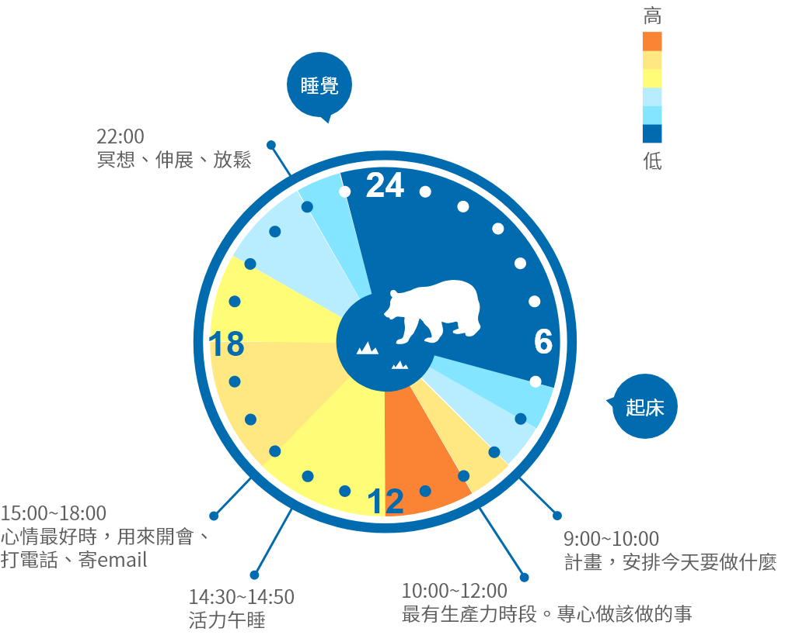

測驗結果
你的生理時鐘是熊型
熊型特色
- ● 占所有人口50%
- ● 每晚至少需要八小時睡眠，也就是每週五十六小時，才能避免所有缺乏睡眠可能造成的健康問題，包括：體重增加、糖尿病、情緒失調還有整體生活滿意度低落。
- ● 若睡眠不足，則會導致週末睡過久。
- ● 容易體重超標
24h典型作息
- 起床情形：
- 7:00 鬧鐘響了，我按了好幾次貪睡提醒，然後才起床開始這一天。
- 上班情形：
- 7:30~9:00 做早上的例行公事。沖澡、吃早餐、喝兩杯咖啡，然後迷迷糊糊開車去上班。
- 9:00~10:00 去上班、融入環境。四處轉轉，跟每個人都聊一下，談談電視節目或新聞。沒做多少事。
- 11:00~12:00 終於感覺自己全醒了，可是此時進度已經落後。
- 11:15~13:00 我愛午餐。走路可到的距離之內有很多選擇，但我通常去隔壁熟食店買個三明治。
- 13:30~14:30 以精力來說，這時間感覺還可以
- 14:30~14:50 沒了幹勁，真的覺得很睏。可是我必須保持良好的專注力，所以就喝可樂或是蠻牛，或是吃根巧克力棒。
- 15:00~18:00 大概三點左右開始看時鐘，我等不及趕快下班了。
- 下班情形：
- 19:30~20:00 飽餐一頓之後，只想換上寬鬆的運動褲，坐在沙發上放鬆。
- 20:00~22:00 週末時，我跟我太太可能去看場電影、聽聽音樂會，或和朋友出去喝一杯。但是週間我最可能是在看電視、玩電腦遊戲，要不就是一直上網，還有一直跑去廚房吃點心。
- 23:00~00:00 十一點上床，可能看看深夜新聞。我跟太太或看看臉書上的新動態，聊聊朋友都貼了些什麼。
- 睡眠情形：
- 1:00~3:00 我通常午夜前會睡著，週日的話，可能要到兩點才會不省人事。
- 4:30~7:00 打呼，至少太太是這麼跟我說的。
完美工作一天
- 最警醒的時候：9點、10點左右一直到下午1、2點
- 最有生產力的時候：早上近中午時

- 
- 7:00 立刻起床，不按貪睡提醒。
- 9:00~10:00 計畫，安排今天要做什麼
- 10:00~12:00 最有生產力時段。專心做該做的事
- 14:30~14:50 活力午睡
- 15:00~18:00 心情最好時，用來開會、打電話、寄email
- 22：00 冥想、伸展、放鬆
- 23：00 上床睡覺
目標
- 1.週間睡眠充足，運動足量。
- 2.改變飲食節律以加速新陳代謝，甩掉幾公斤。
- 3.有策略地小睡和活動 ，讓下午和晚上更有活力。